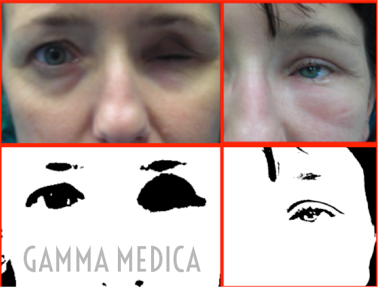

L’innesto grassoso o lipofilling per il trattamento della cavità orbitaria anoftalmicaIl centro Gamma Medica, specializzato in oftalmoplastica, è stato il primo in Italia ad utilizzare il lipofilling per il trattamento delle problematiche secondarie all’asportazione del bulbo oculare: enoftlamo, atrofia grassosa e fibrosa, approfondimento del solco orbito palpebrale. Sono, ormai circa 10 anni che utilizziamo questa tecnica per il trattamento della chirurgia della cavità anoftalmica in pazienti portatori di protesi. L’atrofia del grasso e dei tessuti orbitari sequenziale all’asportazione del bulbo oculare (sia intervento di eviscerazione che di enucleazione) è una condizione che interessa i 2/3 di questi pazienti determinando problemi psicologici estetici e funzionali che influiscono in misura notevole sulla qualità della vita di relazione e sull’attività di questi pazienti. E’ molto frequente rilevare che l’asportazione di un occhio interessa persone giovani, ancora in attività lavorativa e on una vita sociale estremamente attiva, spesso donne o bambini. Si tratta quindi di una problematica che riveste un ruolo sociale e la sua soluzione coinvolge aspetti sanitari, familiari e personali. Fino a qualche anno fa l’enoftalmo secondario ad asportazione de bulbo oculare veniva trattato con varie possibili modalità: – l’innesto dermoadiposo che veniva allocato nella cavità orbitaria o a livello del solco orbito palpebrale, – un impianto subperiosteo nel pavimento orbitario di materiale eterologo (in genere un blocco di silicone modellato). Si trattava di interventi invasivi, a volte estremamente lunghi, spesso in anestesia generale e con risultati non sempre soddisfacenti sia sotto l’aspetto estetico che funzionale. Il grasso infatti in quantità massive va incontro a necrosi che può vanificare completamente il trattamento con grande delusione sia del medico che del paziente. La ripresa della protesi avveniva dopo varie settimane così come il decorso postoperatorio (edema orbitario, dolore, asportazione dei punti di sutura) era molto più complesso e prolungato Da parte nostra abbiamo sfruttato la grande mole di studi clinici e sperimentali e utilizzato l’ampia casistica di pazienti trattati in questi ultimi anni con la tecnica del lipofilling, cioè l’innesto di grasso in frazioni estremamente ridotte, che è stata utilizzata per la chirurgia plastica estetica. La tecnica per quanto riguarda la chirurgia della cavità orbitaria, deve essere praticata da un chirurgo esperto di oftalmoplastica, dura circa ½ ora e consiste nel prelievo di grasso con micro cannule dalla zona addominale o dai glutei, il trattamento e la purificazione del grasso mediante decantazione (una modalità estremamente naturale) e l’innesto nella cavità orbitaria. I vantaggi del lipofilling o meglio innesto grassoso frazionato sono l’utilizzo sia per il prelievo che per l’innesto nella cavità orbitaria di tecniche mininvasive, l’anestesia locale, il regime di day surgery. Non vengono utilizzati punti di sutura e si può riprendere immediatamente l’attività lavorativa o sportiva. Soprattutto, l’innesto grassoso con queste caratteristiche (frazionato e purificato) favorisce l’innesto di cellule staminali che sono state scoperte nel grasso. Secondo gli studi dell’ultimo decennio il tessuto adiposo è una vera e propria banca di cellule staminali che favorisce non solo il restauro volumetrico ma una vera e propria bio ristrutturazione dei tessuti della regione orbitaria con una migliore qualità nella gestione quotidiana della protesi. Questa tecnica con le modifiche da noi apportate (micro innesti, procedura mirata alla zona atrofica associazione con fattori di crescita piastrinici, ritocchi) ha permesso di trattare con successo anche casi estremi di enoftalmo con atrofia completa dei tessuti e contrazione grave della cavità che non permettevano di indossare la protesi. L’esperienza continua e gli studi saranno sempre più approfonditi per risolvere una problematica spesso sottostimata che solo in questi anni comincia ad avere protocolli di terapia standardizzati. 
Caso clinico pre e post di paziente con cavità anoftalmica retratta (enoftalmo estremo)
|

{kind=link}